🍉 Los Fruittis y su aventura cuadrática final 🍉
Alcachofo y sus secuaces han capturado a los Fruittis. Resuelve las ecuaciones para liberarlos.
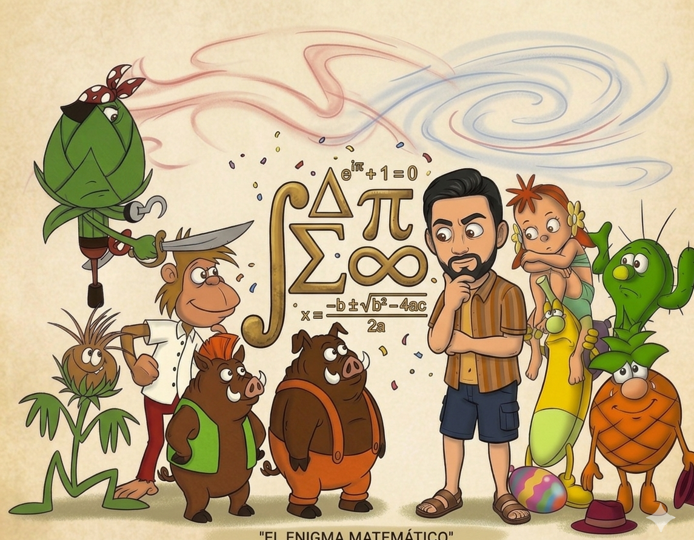
Selecciona duración
Acceso profesor:
Autor: Joaquín Candañedo.
Alcachofo y sus secuaces han capturado a los Fruittis. Resuelve las ecuaciones para liberarlos.

Acceso profesor:
Autor: Joaquín Candañedo.
Kumba ha logrado esconder una clave dentro de una antigua ecuación protegida por la magia de la selva Fruitti. Sin embargo, Alcachofo ha alterado los coeficientes para confundir a cualquiera que intente resolverla. Solo eliminando correctamente las fracciones y restaurando el equilibrio matemático podréis descubrir el secreto.
🍓 La fresa, como Kumba, es rica en vitamina C y antioxidantes, ayudando a reforzar las defensas y mantener la energía necesaria para afrontar cualquier desafío.
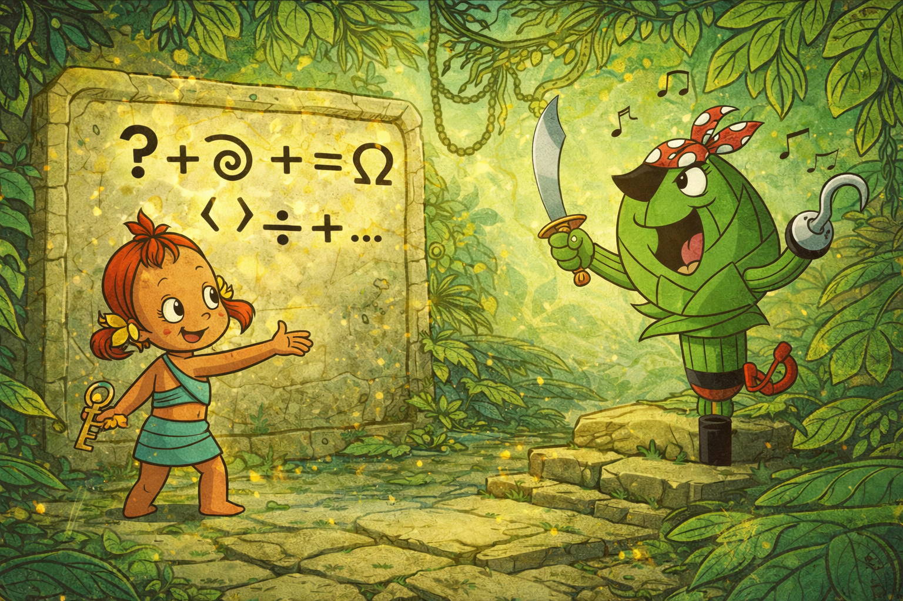
Los jabalíes enemigos de los Futittis han preparado una trampa matemática en mitad del camino. La ecuación parece sencilla, pero si no identificáis correctamente sus factores, quedaréis atrapados en su emboscada. Solo separando los elementos clave podréis escapar y continuar vuestro avance por la isla.
Los jabalíes se mueven en manadas organizadas, colaborando entre ellos para protegerse, buscar alimento y superar los desafíos del entorno, igual que un buen equipo que resuelve juntos cada reto.
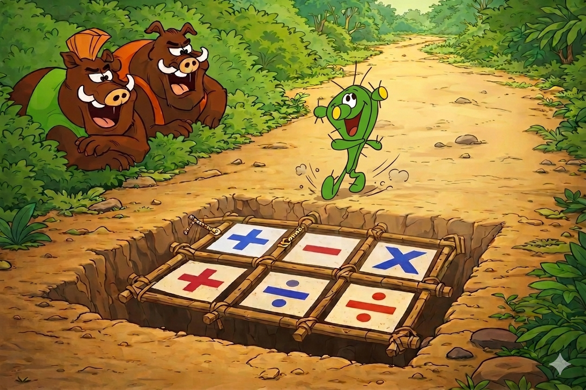
Gorilón bloquea el paso con un reto que requiere fuerza… pero no física, sino mental. La ecuación está diseñada para poner a prueba vuestra capacidad de análisis. Si encontráis sus soluciones ocultas, demostraréis que la inteligencia puede vencer incluso a la fuerza bruta.
Gorilón, como buen gorila, vive en grupo y coopera con los suyos, ya que los gorilas se organizan en familias donde se cuidan, se comunican y trabajan juntos para protegerse y salir adelante.
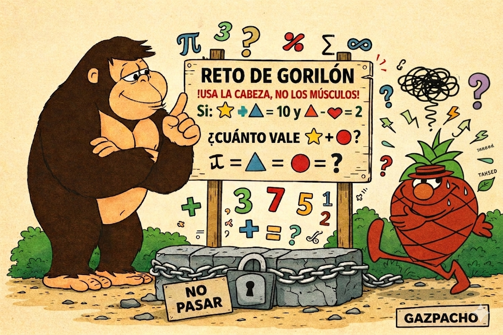
Monus ha creado un duplicador matemático que repite valores hasta el infinito, lo está utilizando para multiplicar tomates. Solo si identificáis correctamente la raíz única que estabiliza el sistema podréis desactivarlo.
🍅 El tomate, base de platos como el gazpacho y el salmorejo, es rico en licopeno, un potente antioxidante que protege el organismo y ayuda a mantener el corazón sano.
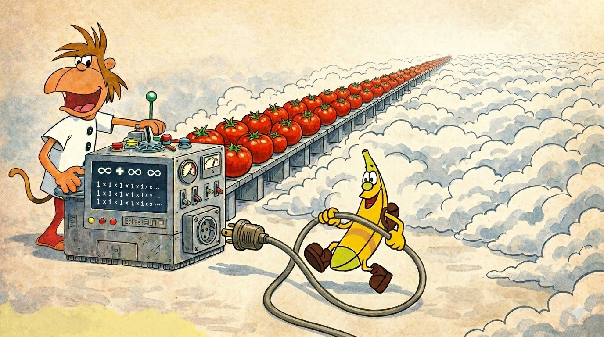
Alcachofo ha lanzado un hechizo aparentemente resoluble… pero algo no encaja. Esta ecuación es una ilusión diseñada para haceros perder el tiempo. Solo quienes comprendan cuándo no existe solución podrán romper el hechizo y avanzar.
Aunque el pirata Alcachofo es un villano de los Fruittis, las alcachofas, también llamadas alcauciles, son un alimento muy nutritivo que aporta fibra, vitaminas y antioxidantes, ayudando a cuidar la digestión y mantener el cuerpo sano.
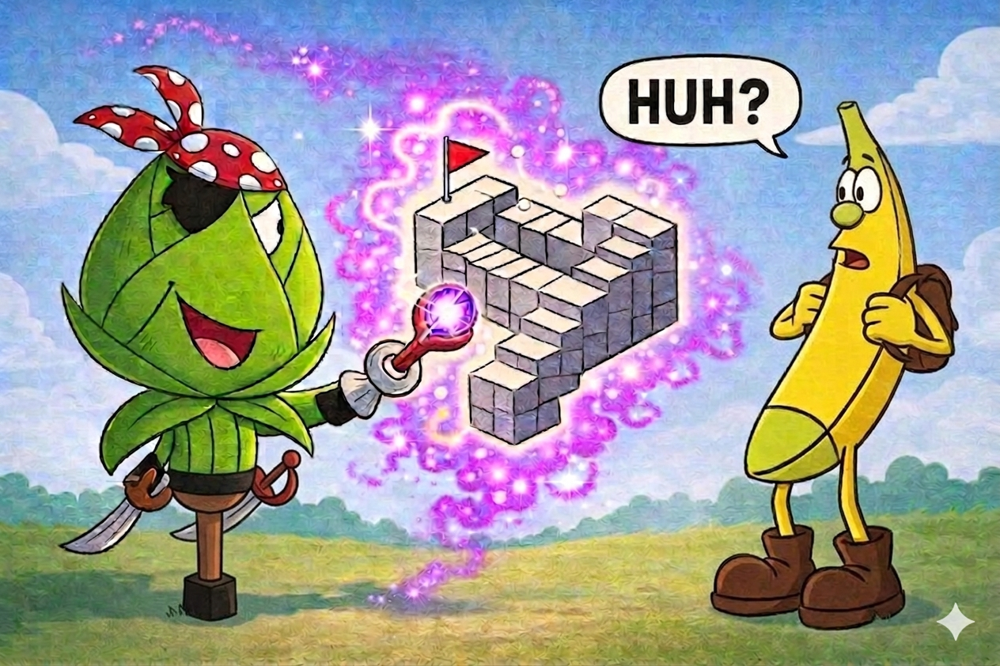
Cardo se ha topado con un espejo mágico que cambia las ecuaciones y las deforma. Lo ha usado con unas bellotas, que han quedado atrapadas dentro del espejo, y en su lugar han salido cacahuetes malvados. Algunas soluciones parecen correctas… pero en realidad son trampas. Tendréis que revisar bien cuáles son verdaderas y cuáles son falsas, o podríais quedaros atrapados en el espejo para siempre.
Las bellotas y los cacahuetes son alimentos muy energéticos y nutritivos, ricos en grasas saludables, proteínas y minerales, que ayudan a mantener la energía y el buen funcionamiento del organismo.
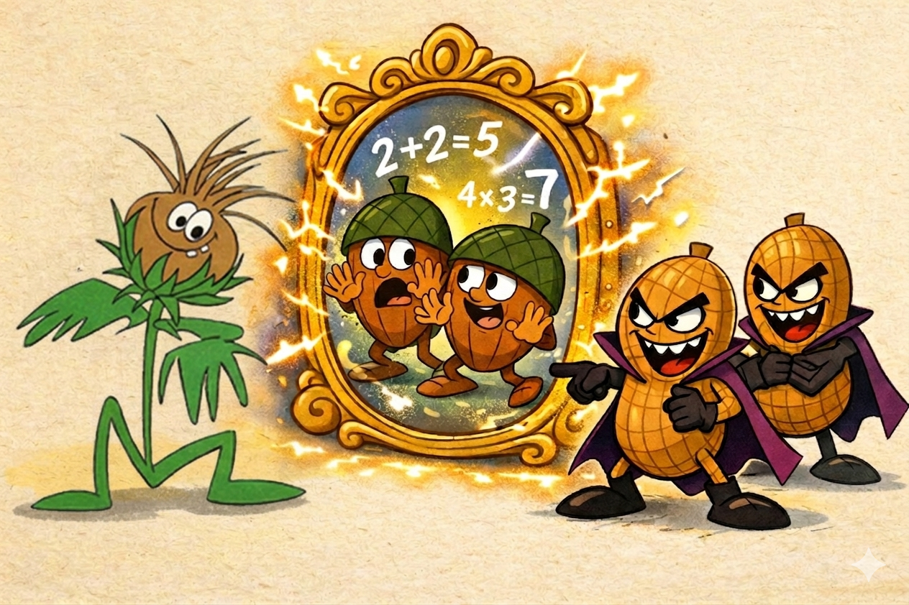
Gorilón regresa con un desafío aún más complejo: una ecuación con un valor oculto. Solo si encontráis el parámetro correcto lograréis equilibrarla perfectamente. Este reto demuestra que, a veces, la clave no está en resolver… sino en entender la condición del problema equilibradamente.
Comer de forma equilibrada significa incluir frutas, verduras, proteínas y cereales en tu dieta para mantener tu cuerpo sano y con energía.
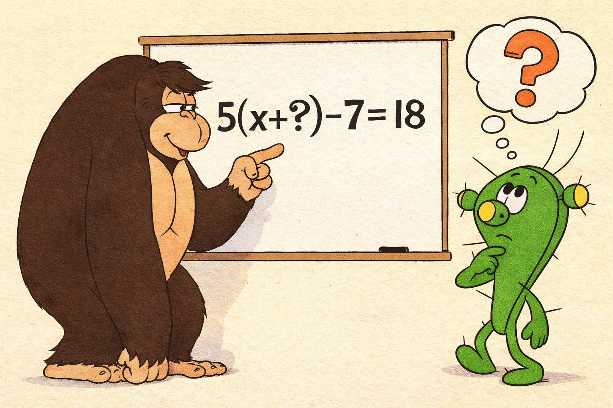
Los jabalíes han colocado una trampa más sofisticada: una ecuación que parece imposible a primera vista. Solo quienes sepan transformarla adecuadamente podrán revelar sus soluciones ocultas. La clave está en cambiar la perspectiva.
Los jabalíes son animales salvajes muy inteligentes y fuertes, que viven en bosques y se adaptan fácilmente a distintos entornos.
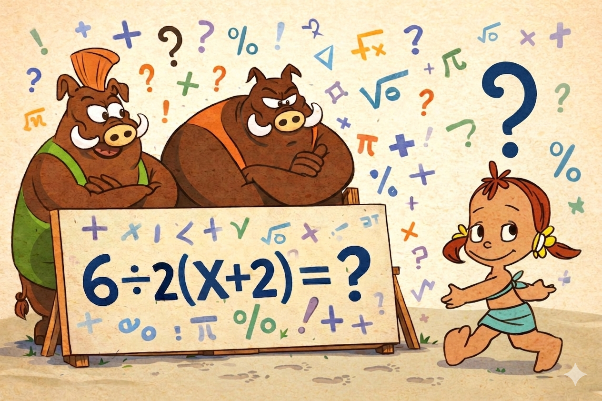
Alcachofo se ha encontrado una barita mágica y con ella lanza su hechizo más poderoso. La ecuación parece caótica, pero en realidad sigue un patrón escondido. Si lográis descubrirlo, podréis deshacer su magia y acercaros a la liberación de los Fruittis.
Las alcachofas son una verdura muy saludable, rica en fibra y vitaminas, que ayuda a cuidar la digestión y se puede cocinar de muchas formas deliciosas.
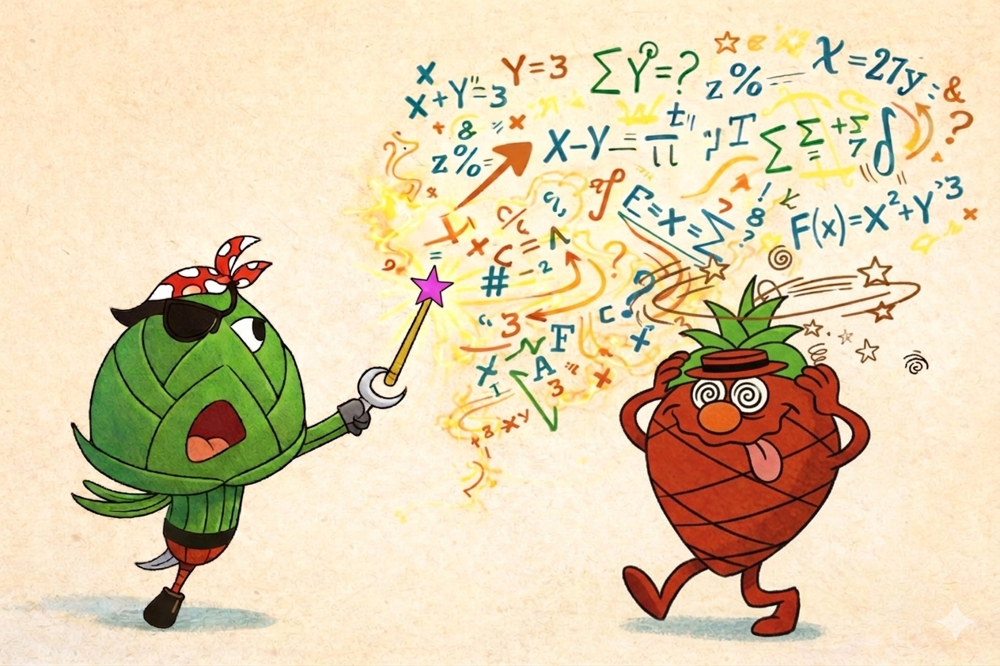
Gazpacho ha preparado una poción especial para ayudaros, pero necesita que resolváis correctamente la ecuación para activarla y añadir la cantidad adecuada del último ingrediente que en un acto de travesura Cardo le ha borrado de las instrucciones. Solo así podréis obtener la energía final para derrotar a los villanos.
🥤 El gazpacho, rico en verduras frescas, aporta vitaminas, hidratación y minerales esenciales, ideal para mantener la concentración y el rendimiento mental.
🍍 Las piñas son una fruta muy beneficiosa, rica en vitaminas y antioxidantes, que ayudan a la digestión y aportan frescura y energía al cuerpo.
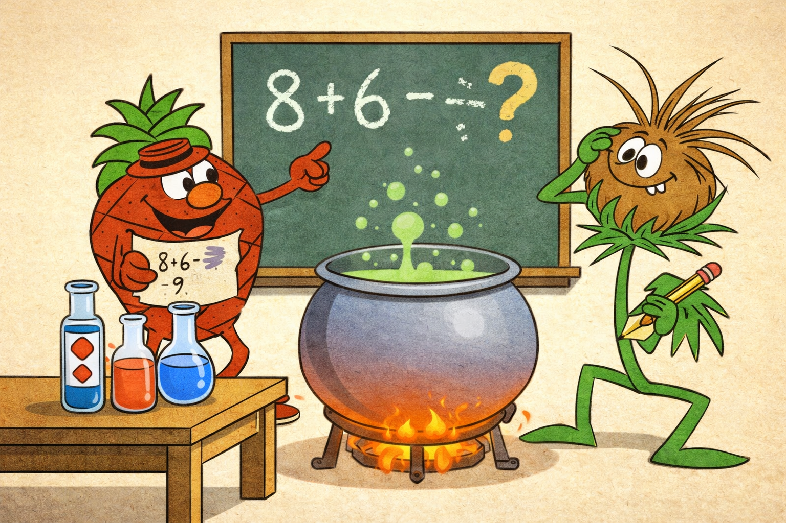
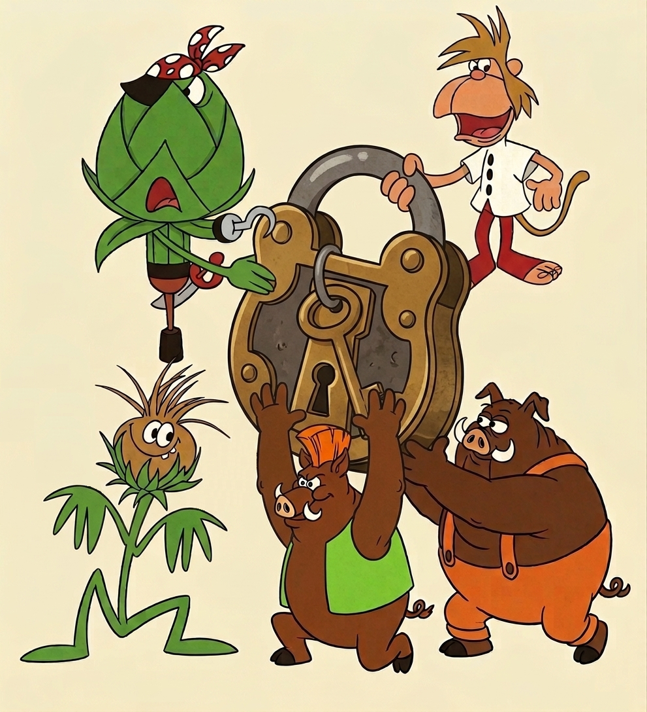
Introduce los 10 dígitos en orden
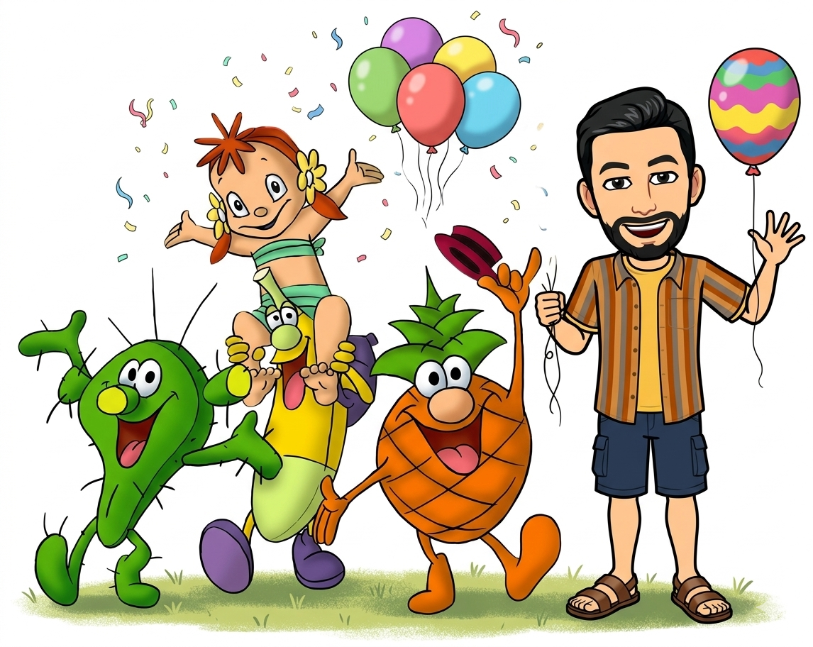
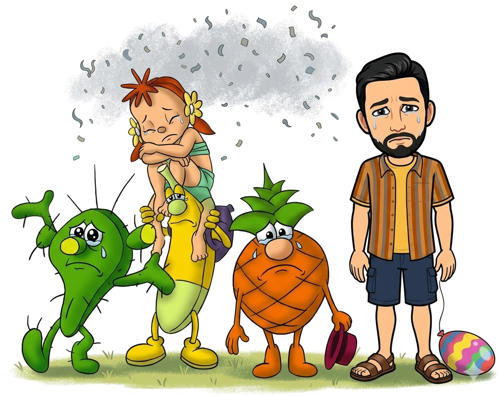